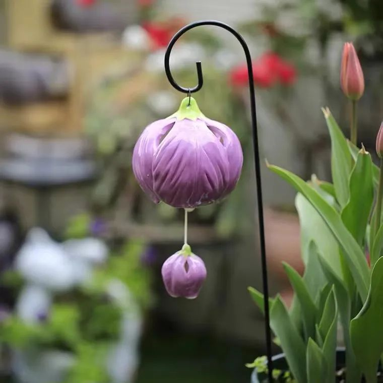

灵气与食物的味道
Muya FreeLand[FreeLand](http://weixin.qq.com/r/5Ejx9QXEGM1kKUGWbx1g)
| 微信号 | gh_0f7f3466f4fc |
| 功能介绍 | 自由之地自然疗法工作室：分享与交流有关矿物、植物、声、光、色彩等自然疗法的知识、资讯及应用。 |
2022-03-04 19:56
原文链接(长) 原文链接(短)
灵气与食物的味道

在Nelly老师的灵气二阶课程中，有一个小环节，是让我们用刚学会的灵气符号来净化食物，然后对比前后的味道不同。这是最有趣的环节，我们都跃跃欲试。不过，我一开始是持有保留态度的，暗暗觉得“应该也不会有太大差别吧，可能口感软一点”，最后的体验也大大刷新了我的认识。
我拆开一包小饼干，那种很普通的葱油味饼干。我先用灵气符号认真地净化了其中一块，手放在上面，为它传送灵气，大概做了二十秒钟。然后我拿起它，缓慢地咀嚼，想记住这个味道。——很普通的饼干味，我并没有尝出什么特殊，淡淡的奶油味，有一点点葱香。我慢慢吃完它，清水漱口，再拿起另一块塞进嘴里。就在它触碰到舌头的一刹那，我立刻知道了刚才灵气对那块饼干起了什么作用。我非常明确地感受到了嘴里这块，有糖精、香精、味精等等各种精的味道冲上了舌头！是非常刺激的咸香味，还有调配出的葱油味。原来刚才那块“没什么特殊”，只是还原了饼干的本味，而现在这块才是工业加工后的味道！
有趣的是，同学们也都做了饼干净化，大家都觉得没净化过的比较好吃（有味道）。Nelly老师笑着说：“谁告诉你们净化完了就会好吃啊？” 想一想，其实现代人习惯的好吃，就是各种精的味道吧！
课程结束后几天，有一位同学分享说，她做了各种实验，觉得不同人的灵气对食物的改变也不同，就像PS滤镜，她自己的是柔化滤镜，会让味道变柔和。而另一位伙伴是锐化，会让味道集中。我感觉在不同的食物上也有差别，对水的作用最显著，自来水烧开，会有一股漂白粉味道，但做完灵气净化，味道会明显变淡，口感也柔和了。现在我养成了习惯，只要喝水都会打符号净化一下了。
试想一下，仅仅是二十秒钟的灵气，就已经对一块饼干产生了可被观测到的口味变化。而当灵气施用于身体，整整一两个小时，我们的细胞会产生怎样的反应。经由这个食物的实验，我感觉灵气真实不虚，它确实是“触碰”了物质，产生了波的振动。而学习者也经由此，对灵气产生了更强烈的信心。
[点击此处可了解最新灵气课程讯息](http://mp.weixin.qq.com/s?__biz=MzAwODAxNzgyOA==&mid=2650900784&idx=1&sn=37510b249f3fa4663afd17f11200385e&chksm=80806bfbb7f7e2ed0200cac4d1e7a26a829279d243f194d9f592c48c0a9064b4be737330f2d5&scene=21#wechat_redirect)